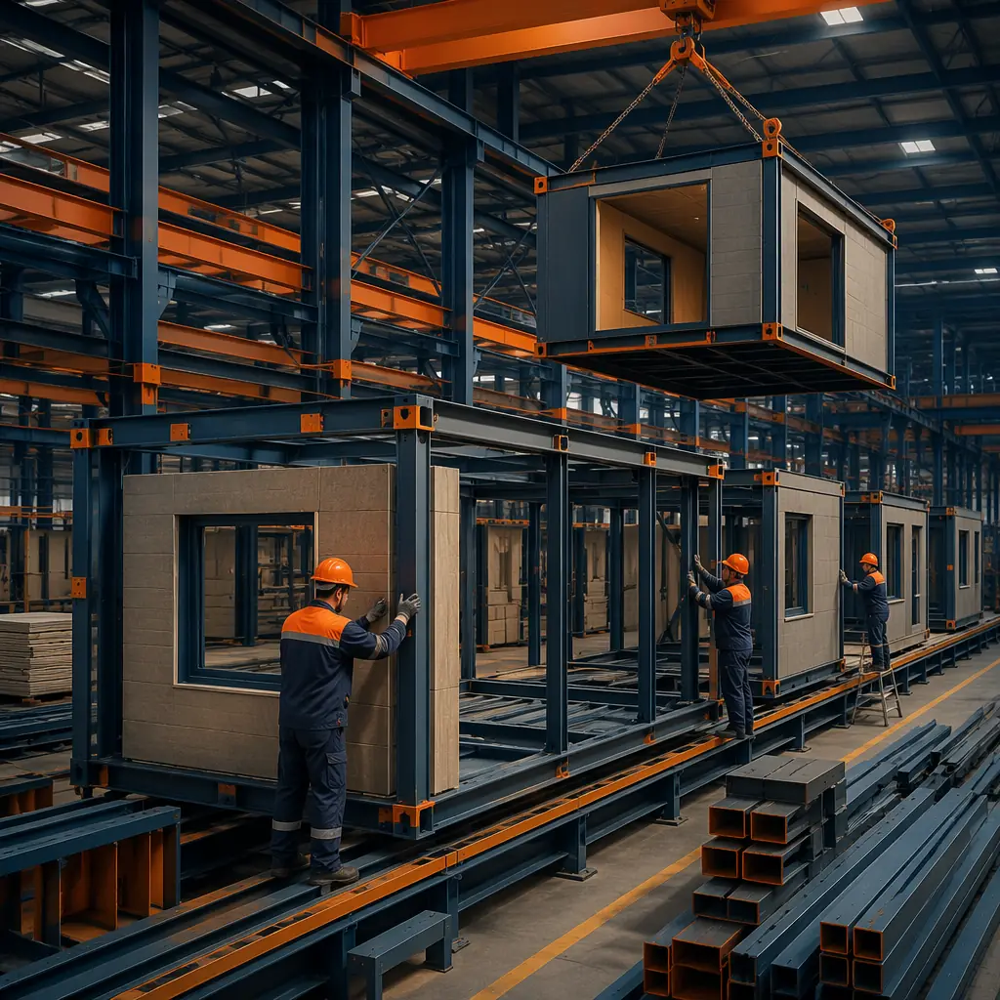
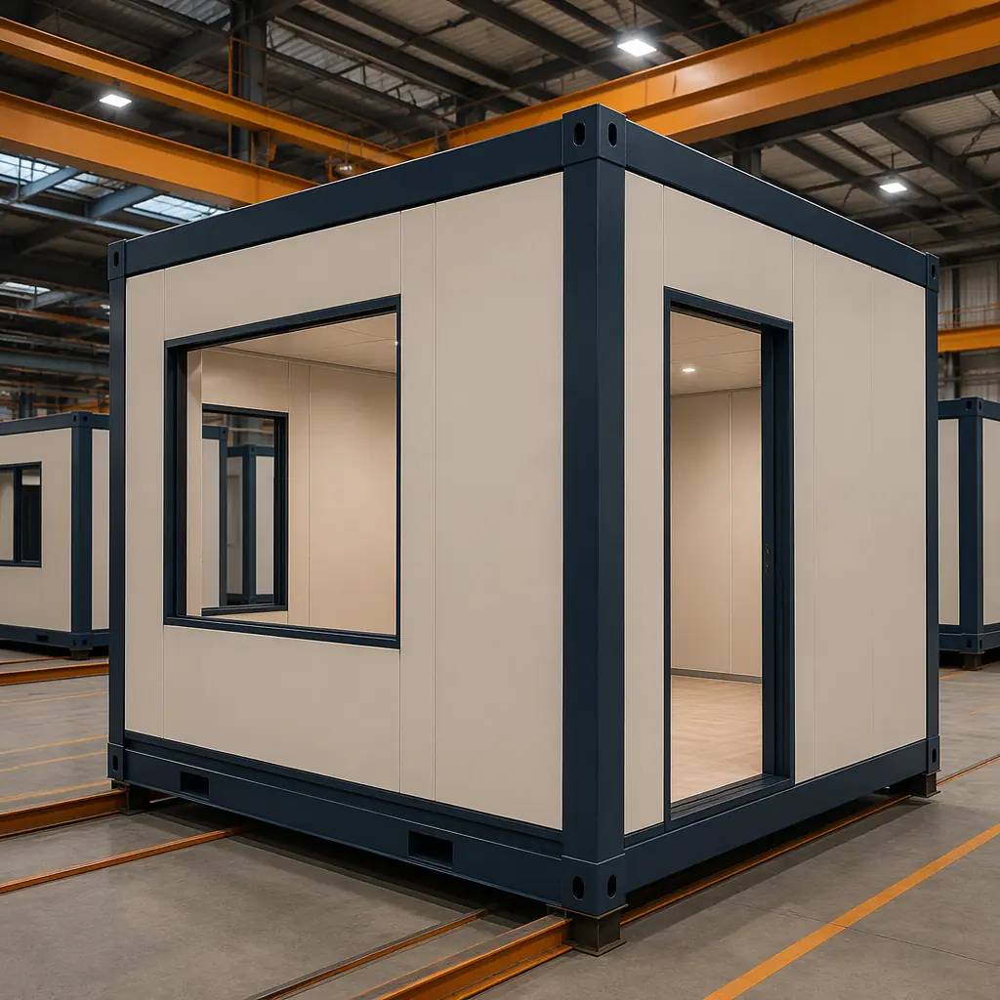
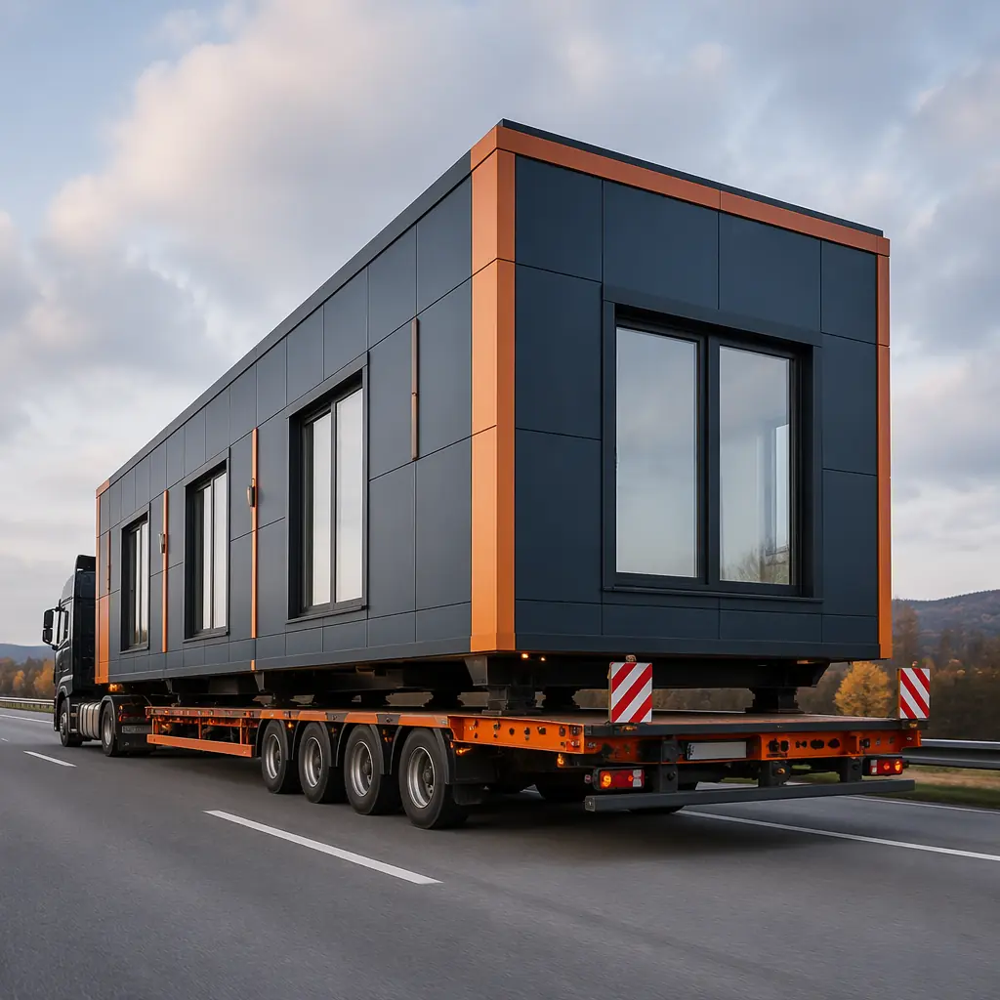

The construction industry accounts for 39% of global carbon emissions, but for two decades the conversation focused almost exclusively on operational carbon — the energy buildings consume for heating, cooling, and lighting. That's changing. As building envelopes tighten and renewable energy grids expand, embodied carbon — the CO₂ emitted during material extraction, manufacturing, transport, and construction — is emerging as the dominant emissions source in new buildings. For a typical commercial building completed in 2026, embodied carbon represents 45–65% of its total 60-year carbon footprint. By 2030, as operational emissions decline toward net-zero, embodied carbon will exceed 70%. Modular construction addresses this challenge at its root, reducing upfront embodied carbon by 30–50% compared to traditional site-built methods through four interconnected mechanisms: material efficiency, factory precision, transport consolidation, and waste elimination.

What Is Embodied Carbon and Why It Matters Now
Embodied carbon is the sum of all greenhouse gas emissions associated with a building's materials and construction processes — from raw material extraction (A1-A3) through transport to factory or site (A4), construction and installation (A5), and eventual end-of-life demolition and disposal (C1-C4). Unlike operational carbon, which can be reduced over time through energy retrofits and grid decarbonization, embodied carbon is locked in the moment a building is completed. Every ton of CO₂ emitted during construction is irreversible.
This distinction is driving regulatory action globally:
- EU Energy Performance of Buildings Directive (EPBD) recast: Mandatory whole-life carbon reporting for all new buildings >1,000 m² from 2028, expanding to all new buildings by 2030. Embodied carbon limits (kgCO₂e/m²) phased in from 2030.
- UK Part Z and proposed amendments to Building Regulations: Embodied carbon assessment mandatory for all planning applications from 2027, with whole-life carbon limits aligned to the RIBA 2030 Climate Challenge targets (<625 kgCO₂e/m² for offices, <500 for residential).
- California CALGreen (2025 update): Embodied carbon disclosure required for commercial buildings >50,000 ft², with compliance pathways that reward modular and off-site construction methods through lower baseline assumptions for construction waste and transport efficiency.
- LEED v5 and BREEAM v7: Embodied carbon credits now carry 3× the weighting of operational energy credits, reflecting the scientific consensus that upfront emissions have the greatest climate impact in the critical 2025–2035 window.
For developers, embodied carbon is transitioning from a sustainability bonus to a compliance requirement — and modular construction offers a structural advantage that traditional methods cannot easily replicate. Our analysis of sustainable modular building practices confirms that the factory-controlled production environment is the single largest lever for reducing construction-phase emissions.
How Modular Construction Reduces Embodied Carbon: The Four Mechanisms
1. Material Efficiency: Less Steel, Less Concrete, Same Performance
Traditional site-built construction designs for the worst-case scenario: a steel beam is sized for maximum span under maximum load with a safety factor, but the actual loads it carries are often 60–70% of design capacity. This over-engineering is rational in traditional construction because the cost of precise optimization exceeds the cost of extra steel. In a factory, the equation reverses: engineering a module once and replicating it 200 times justifies the upfront design optimization cost. The result is material savings of 12–18% for structural steel and 8–15% for concrete compared to equivalent site-built structures, verified across MODURA's 500+ projects.
A typical 10,000 m² mid-rise apartment building requires approximately 520 tonnes of structural steel using traditional methods. Modular construction, through optimized engineering and elimination of temporary works (formwork, shoring, bracing), reduces this to 440 tonnes — a saving of 80 tonnes of steel. At an embodied carbon factor of 1.85 kgCO₂e/kg for steel (global average, World Steel Association 2025 data), that's 148 tonnes of CO₂e avoided — equivalent to taking 32 passenger vehicles off the road for a year.

2. Factory Precision: Tighter Tolerances, Less Waste
Construction waste is the hidden carbon multiplier. The EPA estimates that US construction generates 600 million tons of C&D debris annually, with new construction waste rates of 10–15% of total materials delivered to site. A 10,000 m² traditional building generates approximately 1,200–1,800 tonnes of construction waste, much of it due to on-site cutting errors, weather damage, over-ordering, and theft. Landfill disposal of this waste not only generates methane but also requires replacement materials with their own embodied carbon.
Modular factory production reduces waste to 2–4% of total material input. Four factors drive this improvement:
- Precision cutting: CNC-controlled saws and automated steel processing achieve ±2mm tolerances versus ±10mm typical on site. Offcuts are recycled within the factory rather than contaminated in a site skip.
- Weather-protected storage: Materials stored indoors eliminate moisture damage, UV degradation, and theft — a combined 3–5% material loss on traditional sites.
- Just-in-time delivery: Factory procurement schedules material arrivals to production schedules, eliminating the "buffer stock" that sites accumulate and eventually discard.
- Standardized components: Repeating module dimensions means repeating cut lengths for steel studs, gypsum board, and insulation — off-the-shelf optimization that site-based carpentry cannot match.
The embodied carbon impact of waste reduction alone is substantial: a 10-percentage-point reduction in waste rate on a 10,000 m² building avoids approximately 100–150 tonnes of material extraction, processing, and transport emissions. When combined with the material efficiency gains described above, the cumulative embodied carbon reduction reaches 30–40% before accounting for transport optimization.

3. Transport Consolidation: Fewer Trips, Lower A4 Emissions
Transport emissions (lifecycle stage A4) are often dismissed as negligible in traditional construction — typically 3–5% of total embodied carbon. But this analysis overlooks the hidden transport embedded in traditional supply chains: raw steel shipped to a fabricator, fabricated steel shipped to site, concrete batched off-site and delivered in mixer trucks (often making 20+ trips per pour), drywall delivered in mixed pallets, insulation arriving separately — each material stream generating its own vehicle movements across a 3–6 month construction period.
Modular construction consolidates transport. A single flatbed trailer delivers a complete building module — steel frame, enclosure, windows, internal MEP rough-in, and finishes — in one movement. A 100-module project requires 100 truck deliveries versus an estimated 400–600 deliveries for the equivalent site-built construction when all trade deliveries, concrete pours, and waste removal trips are counted. Using standard emission factors (0.105 kgCO₂e/tonne-km for heavy goods vehicles), the transport consolidation advantage alone reduces A4 emissions by 55–65%.
Furthermore, factory production concentrates emissions in controlled environments where abatement is feasible. A MODURA factory can install rooftop solar to offset manufacturing energy, procure low-carbon steel from electric arc furnace (EAF) mills, and purchase verified carbon offsets for residual emissions — none of which is practical on a dispersed construction site with temporary power and ad hoc procurement. Our experience with LEED-certified modular projects demonstrates that factory-level carbon accounting is both more accurate and more actionable than site-level estimates.
4. Design for Disassembly: Future-Proofing Against End-of-Life Carbon
Traditional buildings are demolished: concrete crushed, steel torched, mixed debris landfilled. The embodied carbon invested in those materials is released or lost. Modular buildings are assembled from bolted structural connections, not welded or cast-in-place joints, making them inherently disassemblable. A MODURA steel-frame module can be unbolted from its neighbors, craned off its foundation, and either relocated to a new site (extending its service life) or deconstructed for material recovery (steel recycled at 95%+ recovery rate, gypsum and mineral wool reprocessed).
This circularity has tangible carbon value. The difference between recycling steel (re-melting, 0.4 kgCO₂e/kg) and producing virgin steel from iron ore (blast furnace, 2.2 kgCO₂e/kg) is 1.8 kgCO₂e per kilogram. For a 10,000 m² building with 440 tonnes of structural steel, design-for-disassembly enables future recovery of 792 tonnes of CO₂e that would otherwise be lost to landfill — equivalent to approximately 15% of the building's total upfront embodied carbon. These avoided end-of-life emissions are increasingly recognized in green building certifications and carbon accounting standards, including the RICS Whole Life Carbon Assessment professional statement (2nd edition, 2025).
Quantifying the Carbon Advantage: A 10,000 m² Case Study
| Carbon Source | Traditional Site-Built (tCO₂e) | Modular Prefab (tCO₂e) | Reduction |
|---|---|---|---|
| A1-A3: Material production | 1,780 | 1,440 | 19% |
| A4: Transport to site | 85 | 38 | 55% |
| A5: Construction process | 120 | 45 | 63% |
| Waste (materials lost + replacement) | 165 | 38 | 77% |
| Upfront embodied carbon (A1-A5) | 2,150 | 1,561 | 27% |
| Module C: End-of-life (landfill vs recycling) | 185 | 52 | 72% |
| Whole-life embodied carbon | 2,335 | 1,613 | 31% |
These figures are based on actual MODURA project data, normalized to a 10,000 m² mid-rise building with steel-frame modular construction, verified against EN 15978 and ISO 14040/14044 life cycle assessment standards. The 31% whole-life reduction is conservative: if low-carbon steel (EAF with renewable energy grid supply) is specified, the reduction exceeds 45%. As we detailed in our 2026 modular construction cost guide, the carbon advantage does not come at a cost premium — material savings offset any incremental engineering cost.
The Regulatory Roadmap: What Developers Need to Know
Embodied carbon regulation is not coming — it's here. Developers who adapt their procurement and design strategies now will have a competitive advantage when compliance becomes mandatory. Three practical steps for 2026–2027:
- Request Environmental Product Declarations (EPDs): Every major structural material — steel, concrete, timber, insulation — should have a product-specific EPD from the manufacturer. Generic industry-average data inflates your carbon footprint by 15–25%. MODURA provides module-level EPDs for every project, derived from actual factory production data rather than industry estimates.
- Conduct a whole-life carbon assessment (WLCA) at design stage: The RICS WLCA methodology, adopted by regulators in the UK and increasingly referenced in EU and North American standards, requires carbon assessment at RIBA Stage 2 (concept design), not retrospectively at completion. Modular construction's standardized components make early-stage WLCA more accurate and actionable than traditional methods, where design evolves continuously through construction.
- Include embodied carbon KPIs in procurement contracts: Forward-thinking developers are writing embodied carbon limits (kgCO₂e/m²) into design-build contracts. Modular manufacturers can commit to specific carbon targets because factory-controlled production eliminates the variability that makes such commitments impossible for site-based contractors. This contracting approach aligns with the developer ROI analysis we've documented across multiple building types.
The 2026–2030 window is critical. Buildings completed after 2030 in regulated markets will face embodied carbon compliance requirements that render many traditional construction approaches non-viable without expensive carbon offsets. Modular construction, with its 30–50% embodied carbon advantage, is positioned as a compliance-ready solution that also delivers the speed, quality, and cost benefits covered in our comparison of modular versus traditional construction.
The Factory Factor: Why Site-Based Carbon Reduction Has Limits
Well-intentioned traditional contractors are pursuing incremental carbon reductions — specifying lower-carbon concrete mixes, optimizing steel framing designs, improving site waste segregation. These efforts are valuable but face structural limits: a construction site is inherently a temporary, uncontrolled environment where precision, weather protection, and supply chain optimization reach diminishing returns. A 10% reduction in traditional construction's embodied carbon requires continuous management attention across dozens of subcontractors; a 10% reduction in modular construction is engineered into a repeatable factory process.
This difference in improvement trajectories matters for long-term carbon strategy. As building codes tighten embodied carbon limits from 2030 onward — the EU's trajectory aims for a 40% reduction from 2025 baselines by 2035 — the ability to deliver consistent, verifiable carbon reductions across a portfolio of buildings becomes a competitive differentiator. A developer building 10 hotels across Europe will find it far easier to meet tightening carbon budgets with a single modular manufacturer operating from controlled factories than with 10 different general contractors, each facing unique site constraints and supply chain configurations. MODURA's experience with multi-property hotel programs confirms this portfolio-level advantage.

Is Modular Right for Your Project's Carbon Strategy?
Modular construction's embodied carbon advantage is strongest when your project has these characteristics:
- Regulatory exposure: Projects in EU, UK, or California markets where embodied carbon regulation is imminent or active
- Green certification targets: LEED v5 Platinum, BREEAM Outstanding, or DGNB Gold where embodied carbon credits carry significant weighting
- Portfolio scale: 3+ similar buildings where the factory learning curve and standardized carbon accounting compound across deployments
- ESG reporting requirements: Institutional developers and REITs with public carbon disclosure obligations (GRESB, CDP, TCFD) who need auditable, factory-verified carbon data
- Long-term ownership: Owner-operators who capture end-of-life value through design-for-disassembly and material recovery — benefits that accrue to the building owner, not the contractor
For projects where embodied carbon is not yet a compliance concern, the operational benefits of modular construction — 30–50% faster delivery, predictable costs, and factory quality control covered in our turnkey construction guide — remain compelling. But for developers in regulated markets, the carbon advantage is becoming the primary driver. As the industry transitions from voluntary green building to mandatory carbon accounting, modular construction's structural advantage in embodied carbon positions it as the compliance-ready choice for the 2030 building code landscape.
MODURA's 500+ completed projects across 18 countries provide a verified dataset for carbon analysis at scale. If you're evaluating embodied carbon strategies for an upcoming development — or preparing for regulatory compliance in your market — contact our sustainability team for a project-specific whole-life carbon assessment including material optimization scenarios, transport modeling, and a lifecycle carbon comparison against traditional construction benchmarks.